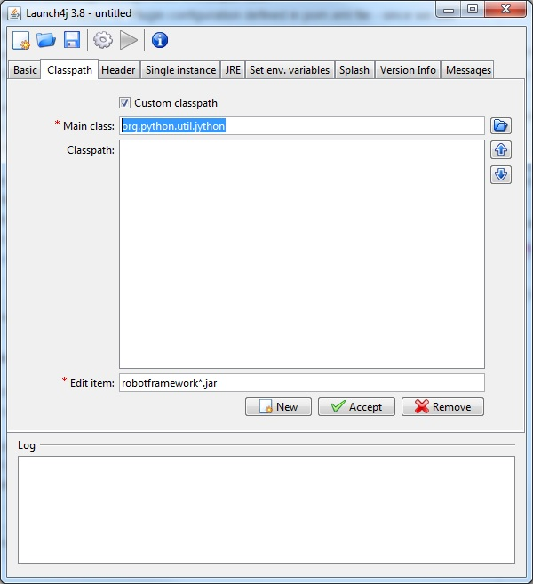

How to integrate RED with Robotframework Maven Plugin
- Download from launch4j applicable for your OS package - we will use launch4j-3.8-win32.zip (it is standalone version, which requires only unzip)
- Run launch4j.exe GUI application
- In Basic tab set Output file: to be jython.exe application, the location and select Dont't wrap the jar, launch only.

- In Classpath tab switch on Custom classpath and set Main class: to org.python.util.jython.
In Edit item: put robotframework*.jar and press Accept button.
Repeat this to add %RF_JAR% variable.


- In Header tab just switch Header type from GUI to Console.

- In JRE tab put in Min JRE version value 1.7.0.

- In main menu press Build wrapper (gear icon) . The application will ask you for save configuration, it is required - the name of configuration and place where it will be located is optional.
- If everything was done ok you will be able to see in Log text area information about Successfully created file.

The created jython.exe file has to two possibilities to set robotframework*.jar location:
1) via already set variable %RF_JAR% you can set it in System Variables
2) using jar located in the same directory where jython.exe file is present
The last test before integration with RED - is to test if executable file was compiled ok and will work.
Execute in command line set RF_JAR=D:\userdata\RED\Desktop>
set RF_JAR=C:\Users\RED\.m2\repository\org\robotframework\robotframework\3.0\robotframework-3.0.jar
and jython.exe -m robot.run --version
If output looks like: Robot Framework 3.0 (Jython 2.7.0 on java1.*) it means that you can integrate jython.exe with RED.
To integrate jython.exe with RED:
1) put jython.exe file to bin directory. It can be anywhere, but parent folder must be named as bin - i.e. C:\bin\
2) It is easier to copy robotframework*.jar to this bin directory instead of set RF_JAR environment variable
3) run eclipse.exe or RED.exe depends on which RED version you are using
4) go to Window -> Preferences -> Robot Framework -> Installed frameworks preference
5) click Add... button and select bin directory from 1.
6) if everything is ok, information about Robot Framework version should be visible
7) when you will create RED project or execute Clean\Build, you should see in Robot Standard libraries standard libraries like i.e. BultIn with information about keywords, which they contains.